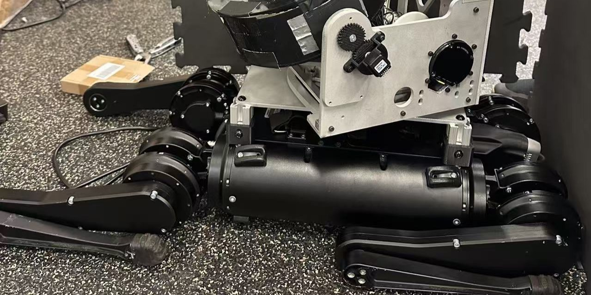
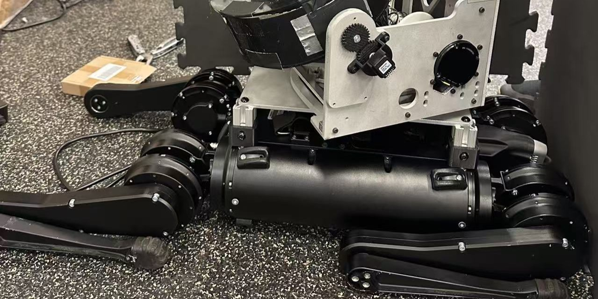

← Back to Projects
NASA LASSIE: Multi-Robot Docking System (TRUSSES)
Jan 2025 - Now· University of Pennsylvania
ROS 2
April Tag
C++
Python
State Estimation
Controls
Raspberry Pi
Extended Kalman Filter
Mechanical Design
Gallery

 

Overview
Built a modular rover platform under NASA LASSIE. Implemented AprilTag-based self-docking with yaw/pitch alignment and range gating; fused GPS/IMU for localization using an EKF; coordinated rover–turret behavior with ROS 2 actions.
Highlights
- Docking alignment error < 1.5° RMS across varied lighting
- State estimation drift < 0.8% over 300 m run (GPS + IMU EKF)
- Deterministic recovery behaviors for tag loss / occlusion
- Reusable ROS 2 packages with launch + params for field tuning